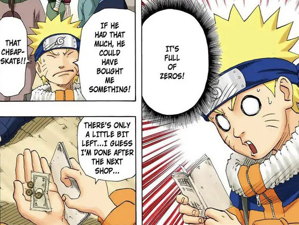
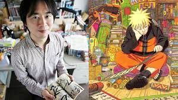
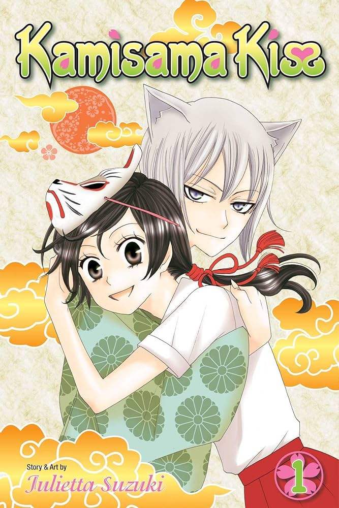
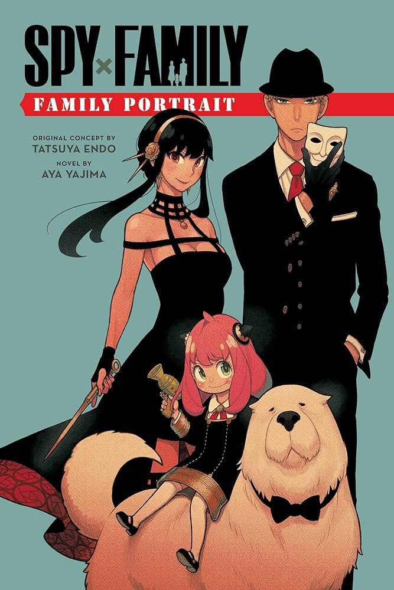
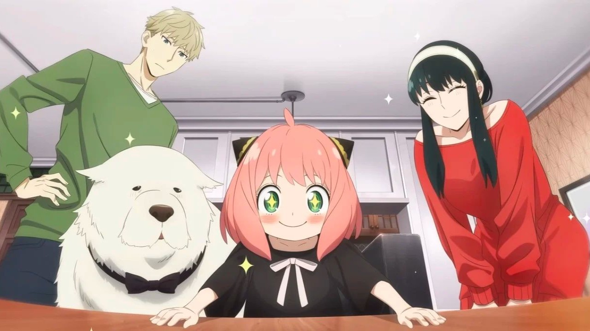

1. Naruto
Naruto is written by Masashi Kishimoto and its genre is a combination of adventure, fantasy, and martial arts. This series of 72 volumes is one of the best-selling manga series of all time with 250 million copies in circulation worldwide in 47 countries and regions. Moreover, it has been developed into an animated series including 700 beloved episodes. Overall, Naruto has amassed a net worth of over $10 billion.
 2. Kamisama Kiss
Kamisama Kiss is written by Julietta Suzuki and its genre is a combination of romantic comedy and supernatural. The story follows a young girl named Nanmi whose life has been turning upside down since her mother’s death and deadbeat father’s absence. WHen she became of age, she was entrusted with the role as the Land God. The funny scenes include her relationships with her friends and how she navigates the challenges of living on earth and being a god-in-training. This is one of the most popular romance anime adaptations.
3. Spy x Family
Spy x Family is written by Tatsuya Endo and its genre is a combination of action, comedy, and spy-fiction. The story is not only an animated series on top of being a successful manga, but the main character named Anya is one of the most popular characters in recent anime series for being cute and relatable. The series's popularity is credited to its lighthearted family themes and simplicity in contrast to its broader cautionary background. It is a great choice that is well-loved across all age groups.
 